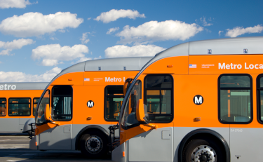

<!-- 1. Pre-launch - comment out below and replace with email signup version -->
<!-- pre-launch call to action-->
<section id="section-select">
	
	<div class="container">
		<div class="row py-5">
			<div class="col-lg-5">
				<div class="select-wrapper">
					<div class="select-content">
						<h1 class="pt-lg-5 pb-lg-3 px-lg-5">Is my bus line changing?</h1>

						{% case mode %}
							{% when 'all' %}
								{% include 'index-all-changes.liquid' %}
							{% when 'select' %}
								{% include 'index-select-line.liquid' %}
							{% else %}
								{% include 'index-email-signup.liquid' %}
						{% endcase %}

					</div>
				</div>
			</div>
		</div>
	</div>
</section>